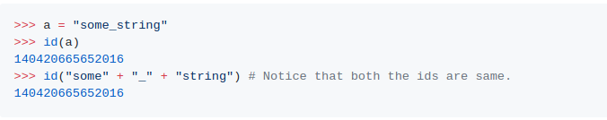
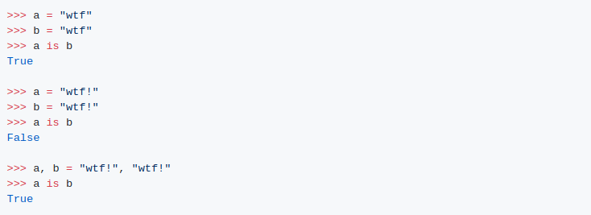
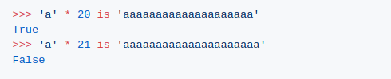

1.
2.
3.
말이 되지 않습니까?
설명:
이러한 동작은 매번 새로운 객체를 만드는 대신 기존의 변경 불가능한 객체를 사용하려는 CPyton의 최적화 (string interning) 때문입니다.
삽입된 후에 많은 변수가 메모리의 동일한 문자열 객체를 가리킬 수 있습니다. (따라서 메모리를 절약합니다.)
위의 작은 정보들 속에서, 문자열들은 암묵적으로 삽입됩니다. 문자열을 암묵적으로 수용해야 하는 시기의 결정은 구현에 따라 달라집니다. 문자열 삽입의 여부를 추측하는 데 사용할 수 있는 몇 가지 사실이 있습니다.
모든 길이 0과 1의 문자열들은 삽입됩니다.
문자열은 컴파일 시 입력됩니다. ('wtf'는 내부 입력되지만 ''.join(['w', 't', 'f']는 내부 입력되지 않습니다.))
ASCII 문자, 숫자 또는 밑줄로 구성되지 않은 문자열은 삽입되지 않습니다. 여기에서 'wtf!'가 '!' 때문에 삽입되지 않은 이유를 알 수 있습니다. 이 규칙의 Cpython 구현은 here에서 확인할 수 있습니다.
a와 b가 같은 행에서 "wtf!"로 설정되면, Python 통역기는 새로운 물체를 만들고, 동시에 두 번째 변수를 언급합니다. 만약 당신이 그것을 별도의 행에서 한다면, 그것은 이미 사물로서 wtf!가 있다는 것을 모릅니다. (왜냐하면 "wtf!"는 위에서 언급한 사실들에 따라 암묵적으로 수용되지 않기 때문입니다). 그것은 컴파일러 최적화로 특히 상호 작용 환경에 적용됩니다.
지속적인 접힘은 파이썬의 peephole 최적화 기법입니다. 즉, 컴파일 중에 'a'*20이라는 표현이 'aaaaaaaaaaaaaaaaaaaaaaaaaaaa'로 대체되어 런타임에 몇 개의 시계 주기를 단축한다는 것입니다. 일정한 접힘은 길이가 20 미만인 문자열에 대해서만 발생합니다.('a'*10**10) 표현식의 결과로 생성된 .pyc 파일의 크기를 상상해 보세요. 여기 같은 것을 위한 실행 소스가 있습니다.